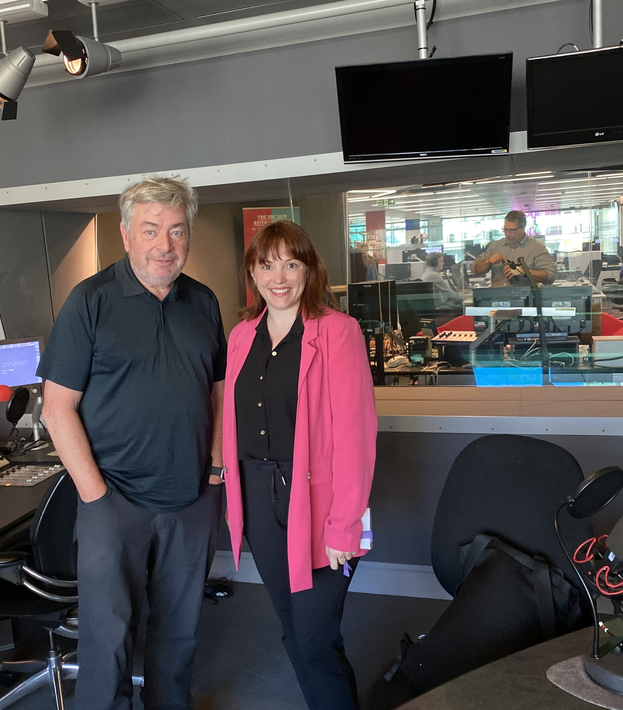
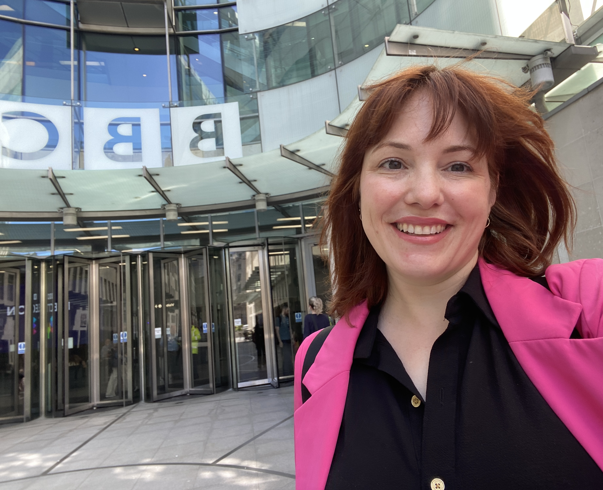

The Briefing Room is a programme where David Aaronovitch invites experts to explore the big issues in the news. In a special 4 part series on health, Aaronovitch looked to explore the recent increase in mental health problems like anxiety and depression.
I was invited to participate in the expert panel, alongside Prof Jennifer Wild, Dr Sharon Neufeld, and Prof Thalia Ele to discuss the research and what they mean.
It was a fantastic conversation, and a true pleasure to get a chance to go to the BBC Broadcasting House to record.

The episode aired on the radio twice in July 2024, and the full episode is now available on the [BBC iplayer(https://www.bbc.co.uk/programmes/m002137x)
In the episode, we discuss a recent paper on the temporal trends of common mental disorders.